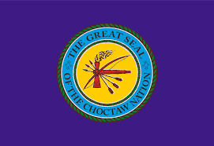

#1 Overall
Iroquois Confederacy
Military98
Economy95
Influence100
The Iroquois Confederacy became one of the most powerful alliances in North America because of political unity, trade influence, and military skill.
Ranking major Native American tribes in the continental United States based on military strength, economic prosperity, territorial influence, leadership, resistance, and cultural impact.
Tap different tribal regions on the map to learn about where they lived, their culture, military power, and historical influence.

Select one of the glowing points on the map to learn about each tribe.
The Iroquois Confederacy is often considered the strongest Native American alliance in the continental United States because of their unique combination of military power, diplomacy, and political organization.
Unlike many tribes that operated independently, the Iroquois united multiple nations together under one confederacy called the Haudenosaunee. This allowed them to combine armies, share resources, coordinate strategies, and create lasting alliances.
Their warriors were highly skilled, but their real strength came from their government system and diplomacy. European powers such as the British and French often competed for Iroquois support because of how influential they were.
The Iroquois also controlled important trade routes in the Northeast, giving them major economic advantages and political influence for centuries.
These rankings combine military strength, economic prosperity, territorial control, influence, and resistance.

The Iroquois Confederacy became one of the most powerful alliances in North America because of political unity, trade influence, and military skill.

The Choctaw became known for strong agriculture, diplomacy, and economic success throughout the Southeast.
| Rank | Tribe | Military | Economy | Influence |
|---|---|---|---|---|
| 1 | Iroquois | 98 | 95 | 100 |
| 2 | Sioux | 97 | 80 | 95 |
| 3 | Navajo | 88 | 96 | 97 |
| 4 | Apache | 95 | 70 | 89 |
| 5 | Comanche | 96 | 78 | 90 |
| 6 | Cherokee | 82 | 91 | 92 |
| 7 | Seminole | 85 | 72 | 84 |
| 8 | Chippewa | 80 | 75 | 81 |
| 9 | Choctaw | 76 | 83 | 79 |
Lacrosse originated from Indigenous cultures and became especially important among Northeastern tribes.
The Iroquois are considered the greatest lacrosse culture because they helped create the game and still compete internationally through the Haudenosaunee Nationals.
The Mohawk nation has deep traditions connected to lacrosse and remains one of the strongest Native influences in the sport today.
Onondaga communities preserved many ceremonial and spiritual traditions connected to lacrosse.
The Cherokee played stickball, a traditional game closely related to lacrosse, which became an important cultural sport.